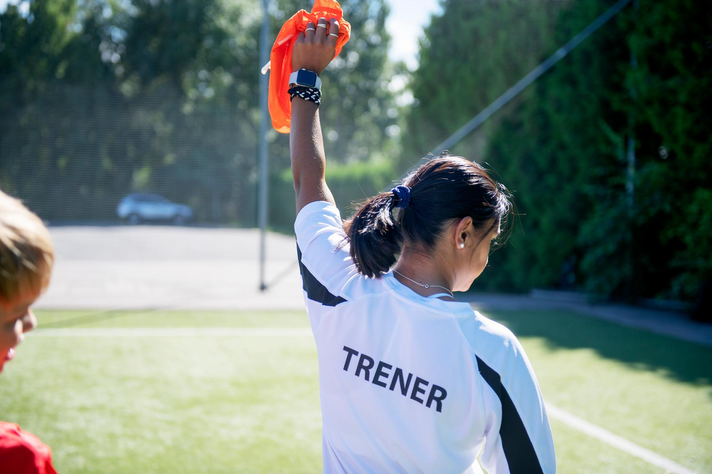

Tusen takk for at du stiller som trener!
Vi er utrolig glade for å ha deg med på laget! Du er med på å
gi barn noen av sommerens beste dager, og din innsats betyr
mer enn du kanskje tror. Enten du leder økter, hjelper til
rundt banen eller bare sprer godt humør, er du en viktig del
av fotballskolen. Vi håper du får en morsom, lærerik og
minnerik uke!
Heia deg 🙌
– Hilsen oss i IL Fram TINE Fotballskole
Bli trener på TINE Fotballskole 2026! 💪
Hvert år samles barn fra Stjørdal for fire dager fylt med fotball,
lek og fellesskap. Det skjer ikke av seg selv – det skjer fordi
noen som deg stiller opp. Som trener på TINE Fotballskole leder du
din egen gruppe, planlegger øktene og – viktigst av alt – gir
barna opplevelser de ikke glemmer. Du trenger ikke å være noen
ekspert. Det viktigste er at du bryr deg, er til stede og vil ha
det gøy sammen med ungene.
Til gjengjeld får du en uke du selv kommer til å huske. Nye
venner, nye erfaringer – og en offisiell attest på at du har gjort
en jobb det er grunn til å være stolt av.
Send melding til Mads Bjørnar (970 32 957) eller
Håvard (482 62 424) i Sportslig komité om du ønsker
å delta.


🌱 Å være trener
Hva skal barna sitte igjen med?
- Gode opplevelser på og utenfor banen
- Nye vennskap og bedre samspill
- Lyst til å fortsette med fotball
- Følelsen av å bli sett og hørt
Hva er målet med TINE Fotballskole?
TINE Fotballskole handler først og fremst om fotballglede. Vi
ønsker å gi barna en uke fylt med lek, læring og fellesskap. Det
viktigste er at de føler seg trygge, har det gøy og kjenner
mestring – både som fotballspillere og mennesker.
Hva forventes av deg?
-
At du møter opp i tide, er til stede og tar ansvar for din
gruppe
-
At du planlegger øktene sammen med trenermakkeren din og er
forberedt på å tilpasse til barna
-
At du bryr deg om barna – snakker med dem, heier, hjelper og
roser
-
At du spør en voksen hvis du er usikker – du står ikke alene
Hvordan være en god rollemodell?
Du trenger ikke være verdens beste trener. Det viktigste er at du:
- Har en positiv og inkluderende holdning
- Snakker fint til både barn og medtrenere
- Viser at du bryr deg om andre
- Lytter og tar ansvar hvis noe skjer
Barna ser opp til deg – og du har en unik sjanse til å gi dem en
skikkelig god opplevelse.
📋 Praktisk informasjon
Før fotballskolen starter
Det er et par ting vi ber deg ordne før vi møtes i august:
-
Kontonummer og telefonnummer – send disse til
sportslig leder så snart som mulig, slik at honoraret ditt kan
utbetales etter fotballskolen
-
Spond – du vil motta en invitasjon på SMS.
Bekreft at du er inne i gruppa – det er her vi deler beskjeder
og praktisk informasjon i løpet av uka
-
Les gjennom denne siden – her finner du alt
du trenger å vite om din rolle, laget ditt og programmet
-
Gjør deg kjent med tiim.no – her ligger
øktene du skal bruke. Se gjennom videoene for din aldersgruppe
så du er godt forberedt
⏰ Oppmøte
Vi møtes hver dag kl. 08:30 i klubbhuset for å gå
gjennom dagens plan, sjekke utstyr og være klare til barna kommer
kl. 09:00. Ved oppstilling gjøres en innsjekk for å registrere
fravær – gi beskjed til kullkontakten hvis noen ikke møter opp.
Dagen er ferdig rundt kl. 14:00, men sett av litt tid til
opprydding og en felles avslutning etterpå.
💬 Samtale ved start og slutt
Start og avslutt dagen med en liten prat med laget ditt. Det
trenger ikke være noe stort – bare noen minutter til å si hei,
spørre hvordan de har det og få barna til å føle seg sett. Spør
gjerne:
- Hva gleder du deg til i dag?
- Hva var det morsomste du gjorde i dag?
- Hvem var du sammen med?
- Er det noe du vil at vi skal gjøre mer eller mindre av?
Husk: Det er ikke alltid fotballen barna husker – men hvordan de
følte seg.
Hvem gjør hva?
Du er ikke alene – her er en enkel oversikt:
-
Du (trener): Leder øktene, skaper trygghet og
trivsel i gruppa, ser hvert enkelt barn
-
Kullkontakt: Har oversikt over barna i
kullet, følger opp fravær og praktiske behov, støtter deg
underveis
-
Sportslig ledelse: Overordnet ansvar for
organisering, støtte til trenerne, håndterer endringer og
konflikter
Trenger du hjelp til noe – spør alltid. Det er aldri dumt å ta
kontakt én gang for mye.


⚽ Laginndeling: Junior, Midt og Senior
Deltakerne er delt inn i tre aldersgrupper – Junior, Midt og
Senior. Inndelingen sikrer at øktene er tilpasset alderen og
nivået til barna du skal trene, og gjør det enklere for deg å
planlegge gode og relevante aktiviteter.
Hvert lag representerer et land og har sin faste bane gjennom
hele fotballskolen. Du vil få vite hvilket lag og hvilken bane
du har ansvar for før fotballskolen starter.
| Gruppe | Årskull | Land | Bane |
|---|---|---|---|
| Junior | 2018–2019 | 🏴 England, 🇪🇸 Spania, 🇫🇷 Frankrike, 🇮🇹 Italia, 🇵🇹 Portugal, 🇩🇪 Tyskland | A1–A6 |
| Midt | 2017–2015 | 🇧🇷 Brasil, 🇦🇷 Argentina, 🇲🇽 Mexico, 🇨🇱 Chile, 🇨🇴 Colombia, 🇺🇸 USA | B1–B6 |
| Senior | 2014–2012 | 🇳🇴 Norge, 🇸🇪 Sverige, 🇫🇮 Finland, 🇩🇰 Danmark | C1–C4 |
Baneinndeling vil henge på klubbhuset.
⚽ Fotballøktene
Som trener er du med på å gjøre øktene morsomme og meningsfulle
for barna. Det viktigste er ikke hva slags øvelse dere gjør – men
at barna er trygge, opplever mestring og har det gøy. Det trenger
ikke være perfekt – det holder at du møter barna med engasjement
og gir dem opplevelser de kan smile av.
Hvordan øktene er lagt opp
Alle trenere bruker de ferdige øktene fra tiim.no. Her finner du
et ferdig program tilpasset din aldersgruppe. Bruk programmene for
dag 1–3, og sjekk gjerne dag 4 om du trenger å bytte ut
enkeltøvelser. Planlegg gjerne øktene sammen med trenermakkeren
din i forkant – to hoder tenker bedre enn ett, og det gjør dere
begge tryggere.
Hver økt er bygget opp av tre deler:
-
🏃 Oppvarming – gjøre kroppen klar og skape trygghet i gruppa
-
🎯 Teknisk øvelse – øve på konkrete ferdigheter i trygge
rammer
- ⚽ Spill – bruke ferdighetene i en ekte spillsituasjon
Hver av de tre dagene har ulikt tema, som «Score mål» eller
«Spille seg fremover i banen», og alle øvelsene er lagt opp etter
dette.
Generelle tips:
- Gjenta øvelser – barna lærer best av repetisjon
- Ha kort ventetid – unngå lange køer
- Forklar kort og enkelt – vis heller enn å snakke
- Gi konkret ros – «Bra du prøvde på en pasning der!»
- Vær fleksibel – det er lov å bytte litt rundt på planen
Forberedelser – tenk gjennom dette før du kommer på
banen:
- Hva skal vi gjøre, og i hvilken rekkefølge?
- Hvordan forklarer jeg aktiviteten best til mitt lag?
- Hva trenger vi av utstyr?
-
Hva gjør vi hvis gruppa er større eller mindre enn forventet?
- Hva gjør vi om en øvelse ikke fungerer som planlagt?
-
Er det behov for å samarbeide med andre lag på noen av
øvelsene?
Velg din aldersgruppe nedenfor for detaljert program og tips
tilpasset ditt lag 👇
Om barna i Junior-gruppen
Barna i Junior-gruppen er ofte nye i organisert aktivitet. Mange
kan være sjenerte eller usikre – og det er helt normalt. De
lærer best gjennom lek, repetisjon og trygghet.
- De har kort konsentrasjonstid
- De forstår lite av regler og posisjoner
-
De trenger trenere som ser dem, heier og skaper trygghet
Husk: Noen kommer for første gang på noe organisert – og da er
hvordan de blir møtt viktigere enn hva økta handler om.
Hvordan gi instruksjoner:
-
Snakk med enkeltbarn i stedet for å rope til hele gruppa
- Vis hva dere skal gjøre – ikke forklar for lenge
-
Hold forklaringene korte: «Vi løper fra hai, klar? Gå!»
-
Bruk positive ord: «Godt prøvd!», «Så rask du var!», «Tøft
gjort!»
Fokus for Junior-uka er mestring og trygghet – at barna går hjem
med et smil og lyst til å komme igjen.
⏰ Timeplan for Junior
| Aktivitet | Min | Mandag | Tirsdag | Onsdag |
|---|---|---|---|---|
| Økt 1 (09:00) | 60 | Tema: Score mål | Tema: Hindre mål | Tema: Score mål |
| Lunsj (10:00) | 30 | I klubbhuset | I klubbhuset | I klubbhuset |
| Økt 2 (10:30) | 75 | Tema: Score mål | Tema: Hindre mål | Tema: Score mål |
| Frukt (11:45) | 30 | Kullkontaktene kommer til banen | Kullkontaktene kommer til banen | Kullkontaktene kommer til banen |
| Internturnering (12:15) | 40 | Organiser med andre på junior | Organiser med andre på junior | Organiser med andre på junior |
| Avslutning (12:55) | 5 | Avslutningssamtale med gruppa | Avslutningssamtale med gruppa | Avslutningssamtale med gruppa |
🏆 Konkurranser og kvalifisering
På torsdag er det finale i tre morsomme konkurranser – én
finalist per lag per klasse. Det betyr at hvert lag må
gjennomføre intern kvalifisering i løpet av onsdagen, gjerne
mellom øktene eller når det passer. Det er trenerens ansvar å
organisere dette innad i laget og rapportere til Sportslig
komité hvilken spiller som skal delta i finalen på torsdag.
Det vil bli holdt egne finaler for Junior, Midt og Senior.
🎯 Presisjonsskyting
En kjegle plasseres i et 7'er-mål. Oppgaven er å treffe kjeglen
med ballen. Kjeglen flyttes til ulike steder i målet for å
variere vanskelighetsgraden.
🥅 Straffekonkurranse
Straffespark mot 7'er-mål med keeper. Avstanden til målet kan
varieres for å tilpasse vanskelighetsgraden.
⚽ Fotballhockey
Fire kjegler plasseres på bakken og danner en firkant. Oppgaven
er å plassere ballen inni firkanten. Avstanden til firkanten kan
varieres.
🏆 Torsdag: Turnering og finaledag!
Torsdag er den store dagen – her møtes lagene til turnering, og
finalistene fra onsdagens kvalifisering gjør seg klare til å
kjempe om æren i presisjonsskyting, straffekonkurranse og
fotballhockey.
Som trener er din rolle å forberede laget godt, heie dem frem og
sørge for god stemning – uavhengig av resultat. Husk at torsdag er
en feiring av hele uka, ikke bare en konkurranse. Alle fortjener å
gå hjem med hodet hevet og et smil om munnen.
Kampoppsett, tidspunkter og baneinndeling for din aldersgruppe
finner du nedenfor.
- 5v5, inkludert keeper
- 10 min kamper
- Flytende bytter
- Pressfri sone ved målspark
- Ekstra spiller ved 3-måls ledelse
- Dommer med veilederrolle
| Tid | Bane A1 | Bane A2 | Bane A3 |
|---|---|---|---|
| 09:10 | 🏴 England - 🇪🇸 Spania | 🇫🇷 Frankrike - 🇮🇹 Italia | 🇵🇹 Portugal - 🇩🇪 Tyskland |
| 09:30 | 🏴 England - 🇫🇷 Frankrike | 🇪🇸 Spania - 🇵🇹 Portugal | 🇮🇹 Italia - 🇩🇪 Tyskland |
| 09:50 | 🏴 England - 🇮🇹 Italia | 🇫🇷 Frankrike - 🇵🇹 Portugal | 🇪🇸 Spania - 🇩🇪 Tyskland |
| 10:00 | Lunsj i klubbhuset | ||
| 10:40 | 🏴 England - 🇵🇹 Portugal | 🇮🇹 Italia - 🇪🇸 Spania | 🇩🇪 Tyskland - 🇫🇷 Frankrike |
| 11:00 | 🏴 England - 🇩🇪 Tyskland | 🇵🇹 Portugal - 🇮🇹 Italia | 🇪🇸 Spania - 🇫🇷 Frankrike |
| 12:00 | 🎯 Finaler i Presisjonsskyting | ||
| 12:15 | 🥅 Finaler i Straffekonkurranse | ||
| 12:30 | ⚽ Finaler i Fotballhockey | ||
| 12:45 | 🏆 Finale i Junior-turnering | ||
| 13:10 | 🏆 Finale i Midt-turnering | ||
| 13:30 | 🏆 Finale i Senior-turnering |
🌟 Årets trener
I år skal vi igjen kåre årets trenere. Dette er vår måte å
anerkjenne de som virkelig har gitt alt for barna sine denne uka.
Vi ser etter trenere som:
-
Er til stede – ser hvert enkelt barn og møter
dem der de er
-
Skaper trygghet – bygger et godt miljø i
gruppa
-
Er godt forberedt – møter opp klar og
strukturert
-
Er et forbilde – i språk, holdning og
oppførsel
-
Sprer glede – gjør fotballskolen til et
høydepunkt for barna
Vinnerne mottar en oppmerksomhet fra oss – men viktigere enn det:
du vil ha gjort en ekte forskjell for barna du har hatt ansvar for
denne uka 🙌
Praktisk informasjon
-
🤝 Fairplay
På TINE Fotballskole er det nulltoleranse for mobbing og dårlig oppførsel – på og utenfor banen. Du er en av de viktigste personene for at uka blir bra for barna, og måten du oppfører deg på smitter.
Som trener forventer vi at du:- Ser alle barna – møt dem med interesse, respekt og trygghet
- Er positiv og støttende – både i medgang og motgang
- Er et forbilde – i språk, oppførsel og holdning
- Hjelper dommeren til å lykkes – vis respekt og samarbeid
- Bygger trygghet i gruppa – skap gode rammer og fellesskap
-
📵 Mobilfri fotballskole
På TINE Fotballskole ønsker vi at både barn og trenere er mest mulig til stede i det som skjer. Det betyr: snakke sammen, leke, spille fotball og ha det gøy – uten å bli forstyrret av mobilen.
Derfor oppfordrer vi alle til å legge vekk mobilen i løpet av dagen. Det handler ikke om regler – det handler om tillit, tilstedeværelse og fellesskap. Du er med på å gjøre fotballskolen til et høydepunkt for barna – og du går ikke glipp av noe. Du er midt i noe viktig 💙
Slik gjør vi det i praksis:- Legg mobilen i sekken, lomma eller jakka før økta starter
- Trenger du å se noe for økta du skal holde, er det selvfølgelig greit
- Trenger du å sjekke noe i pausen – gjør det raskt og diskret
- Skal du ta en telefon? Ta det på pauserommet i klubbhuset
-
🚨 Hvis noe skjer
Du skal aldri stå alene i en vanskelig situasjon. Det finnes alltid en voksen i nærheten du kan spørre – ta heller kontakt én gang for mye enn én gang for lite.
Et barn er lei seg eller ukonsentrert? Ikke press på. Gi beskjed til kullkontakten, som tar over derfra.
Noen krangler eller det oppstår konflikt. Bryt inn rolig og tydelig. Om det ikke løser seg, gi beskjed til kullkontakten.
Et barn skader seg. Stopp aktiviteten og gi beskjed til kullkontakten.
Foreldre tar kontakt. Det er greit å svare på enkle spørsmål, men henvis til kullkontakten hvis det handler om praktiske eller personlige forhold rundt barnet.
Husk: Det du opplever på fotballskolen, holder du innenfor fotballskolen. Ikke legg ut bilder eller video av barna uten tillatelse.